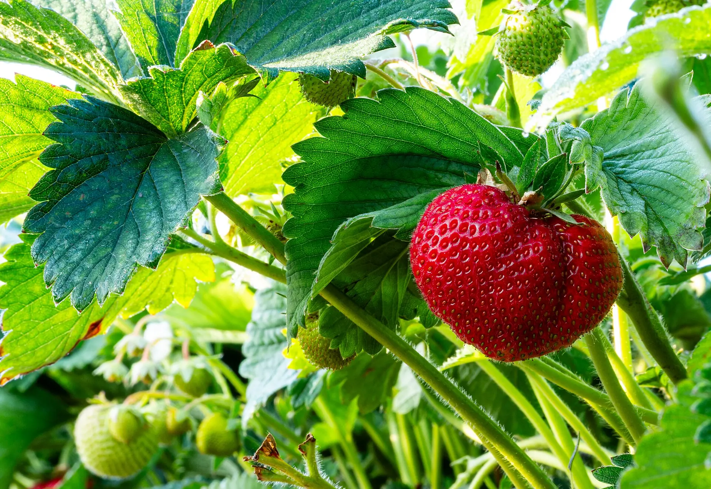

01 / Ягодный
Клубнично-розовый фон, красные акценты и глубокий зелёный. Основной вариант.
Посмотреть вариант →Ягодная поляна · Покров
Три варианта одного сайта: выберите настроение и посмотрите, как оно раскрывается в каталоге, истории фермы и контактах.

Клубнично-розовый фон, красные акценты и глубокий зелёный. Основной вариант.
Посмотреть вариант →Свежий зелёный фон и мягкие природные оттенки. Настроение летнего сада.
Посмотреть вариант →Медово-жёлтый фон и тёплые персиковые детали. Яркий и гостеприимный.
Посмотреть вариант →